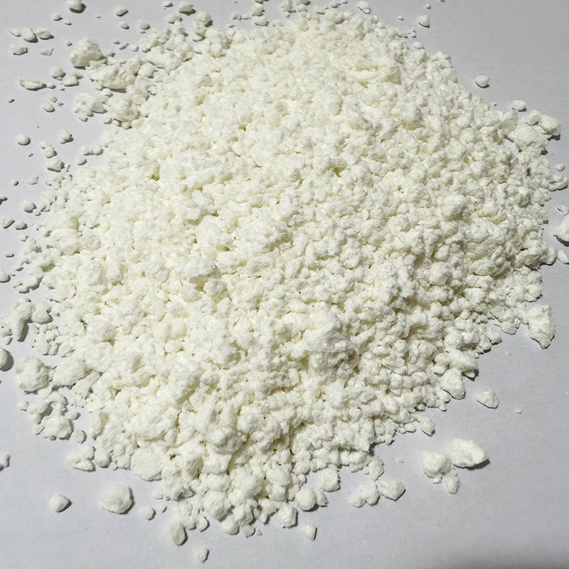

Ketonen
De stof aceton behoort tot de ketonen. De
karakteristieke groep in deze verbindingen is net als bij de aldehyden een C=O-groep,
maar bij de ketonen is het C-atoom van deze groep niet het begin van de koolstofketen. De
eenvoudigste ketonen zijn de alkanonen. Dit zijn alkanen met één ketongroep. Bij de naamgeving gebruik
je het achtervoegsel -on. Omdat bij ketonen de groep zich ergens in
de koolstofketen bevindt, is een plaatsnummer vaak noodzakelijk. In de figuren onderaan zie je een keton
als
voorbeeld !!!3-methylpentaan-2-on.!!!

Voorbeelden
Het eerste bekende voorbeeld is testosteron, het mannelijke geslachtshormoon. Het is
verantwoordelijk voor de ontwikkeling van mannelijke kenmerken zoals spieropbouw, baardgroei, een lage
stem en de aanmaak van sperma. Een ander bekend voorbeeld is aceton. Het is een kleurloze, zeer
brandbare en vluchtige vloeistof met een karakteristieke, scherpe geur. Vanwege het sterke oplossende
vermogen wordt het veel gebruikt als nagellakremover, verfverdunner en voor het reinigen van
laboratoriumglaswerk. Als laatst hebben we benzofenon. De belangrijkste eigenschap is het
vermogen om ultraviolet (UV) licht te absorberen. Daarom vind je varianten vaak terug in
zonnebrandcrème, inkt en plastic verpakkingen om verkleuring of schade door zonlicht te voorkomen.